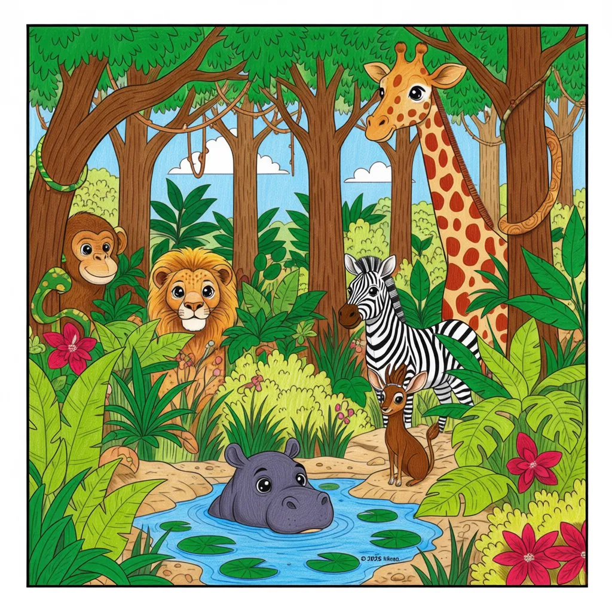

Versteckte Dschungel-Herausforderung
Finde das nächste Malabenteuer!

Wusstest du?
- Jeder große Entdecker weiß, dass eine Reise nur endet, wenn eine neue beginnt.
- Deine tolle Arbeit an der „Safari-Funken-Abenteuer“-Sammlung zeigt deine Hingabe und dein Talent.
- Deine Neugier und Kreativität sind deine besten Werkzeuge für Entdeckungen!
Nächste Schritte (Spaßige Fakten!)
- Hör nie auf, nach neuen Dingen zu suchen, die du lernen, ausmalen und dir vorstellen kannst.
- Kannst du den versteckten Link finden, der dich zu deiner nächsten Sammlung führt?
- Ein echter Künstler sucht immer nach dem nächsten Meisterwerk! Strahle weiter!